资料
言语
逻辑
做题顺序：
1.读题，判断题型
2.写出题型对应公式
3.找数，代入公式
4.计算结果，排除选项
题型
一、工程问题
（一）特征
一项工程由几个人做
（二）公式
s=v*t
s是工程总量，v是工作速度，t是工作时间
（三）题型分类
因为svt三个量，必须给两个才能求第三个量的值，但是题目一般只给一个量，所以要假设第二个量，才能计算第三个量的值。
一般都是假设速度为某个值，或者设速度为未知数，列表法解题
1.给定速度之比型
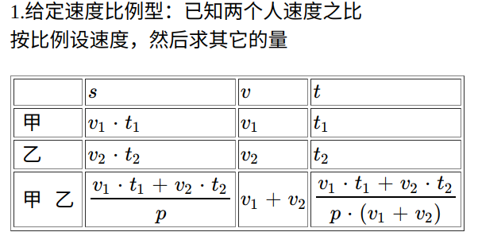
2.给定时间型

3.速度不好设值型
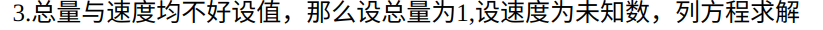
二、行程问题
（一）特征
几个人行走，相遇或追及
（二）公式
`s_{相对}=v_{相对}*t`

（三）题型分类
一般要给速度设值，或者设速度为未知数，列表法和画图法解题
1.相遇问题
`s_和=(v_1+v_2)*t`
（1）同时出发相遇问题
（2）不同时出发相遇问题
（3）中点相遇问题
（4）往返相遇问题
相遇1次，一共跑了s，用时t
相遇2次，一共跑了3s，用时3t
相遇n次，一共跑了(2n-1)s，用时(2n-1)t
第一次相遇距离A点`s_1`，第二次相遇距离A点`s_2`，距离B点`s_3`，`s = (3s_1+s_2)/2 = 3s_1 -s_3`
第一次相遇：`s_1 = v_甲*t`
第二次相遇：`3s_1 = v_甲*3t`
`3s_1+s_2=2s`
所以`s=(3s_1+s_2)/2`
`3s_1-s_3=s`
（5）多人多次相遇问题
2.追及问题
`s_差=(v_1-v_2)*t`
（1）同时同地追及
（2）同时不同地追及
（3）同地不同时追及
（4）汽车追火车
3.流水行船
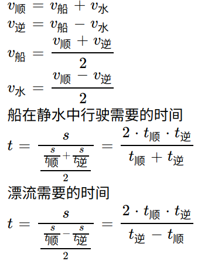
4.环形跑道
（1）环形相遇
相遇n次，一共跑了ns，用时nt
（2）环形追及
追上n次，多跑ns，用时nt
三、时钟问题
（一）特征
涉及时针分针夹角
（二）公式
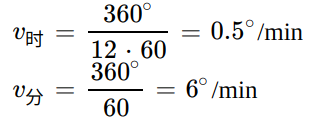
n时m分，夹角公式
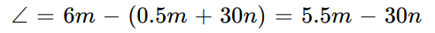
（三）题型
1.已知时间求夹角
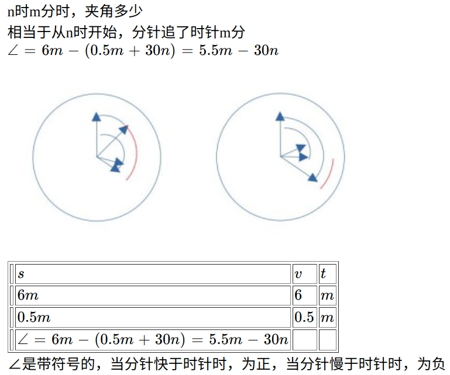
2.已知夹角求时间
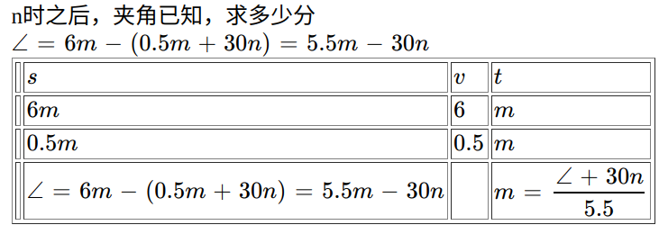
3.一定时间，分针追上时针多少次？
5.5*t/360
24小时内，分针追上时针几次
分针跑了24圈，时针跑了2圈，所以分针比时针多跑22圈，所以追上22次
每次追上前后都有一次垂直，所以共垂直44次
最开始的重合，属于上一天的最后一次追上，不属于今天的，所以与之垂直的两次也属于上一天的，不算今天的。
但是今天最后一次追上，与之垂直的那两次，虽然超过0点，但也算今天，不算明天的。这样理解追上一次垂直两次就比较简单了。
四、经济问题
（一）特征
求利润
（二）公式
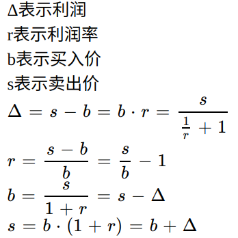
（三）解法
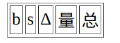
列表法
五、整数特性
（一）特征
题目出现比例m:n，倍数n倍，分数m/n，百分数n%
量都是整数，比如人数，个数，岁数
（二）解法
核心思想是：判断是否整除，是否同余
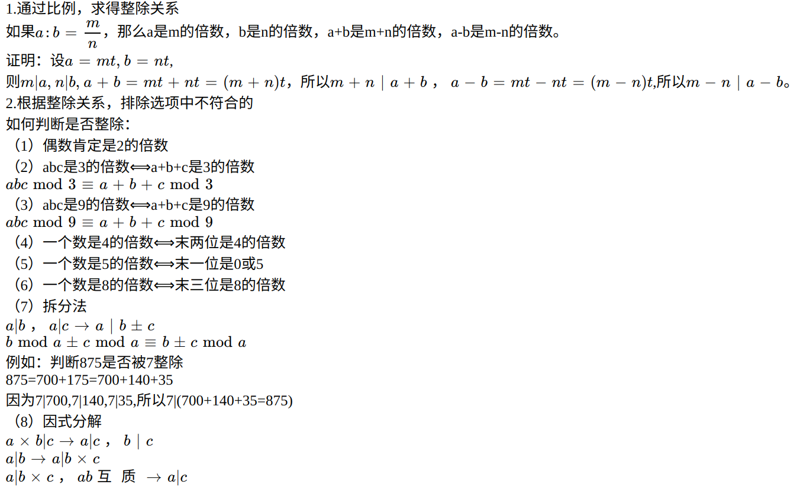
六、余数问题
（一）特征
除以几余几；平均分成几组余几个/差几个
（二）解法
余同加余，和同加和，差同减差，最小公倍数做周期。
和指的是除数+余数；差指的是除数-余数
例题1：
三位数的自然数 N 满足：除以 6 余 3，除以 5 余 3，除以 4 也余 3，则符合条 件的自然数 N 有几个：
解：余数相同，所以利用余同加余，N=60n+3，n的取值范围是从2-16,共15个。
七、不定方程
（一）特征
ax+by=c
（二）解法
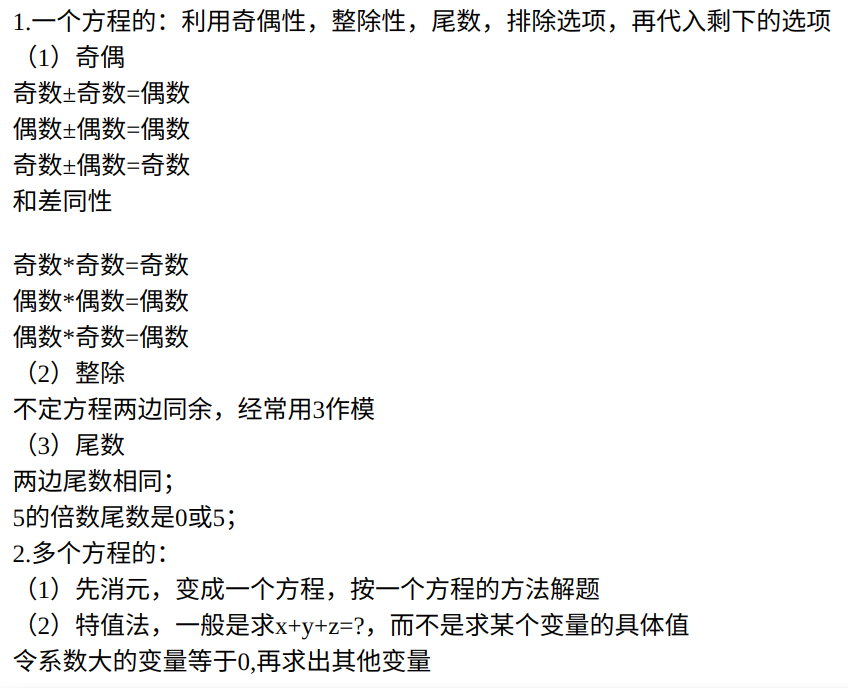
八、年龄问题
（一）特征
（二）解法
每年每人长一岁，两人年龄差不变
n个人年龄和增加n岁
1.排除法
2.代入法
3.方程法
4.列表法
九、浓度问题
（一）特征
溶液
（二）解法
浓度=溶质/溶液
把溶质与溶剂看成两个独立的部分，倒出溶液1/3相当于分别倒出溶质的1/3与溶剂的1/3。
1. 特值法
当不给出具体值时可以赋个好算的值
2.十字交叉
十、集合问题
（一）特征
两集合，三集合
（二）解法
1.公式法
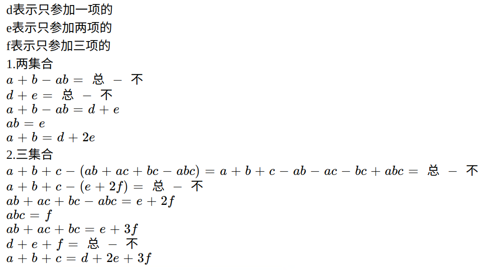
2.画图法
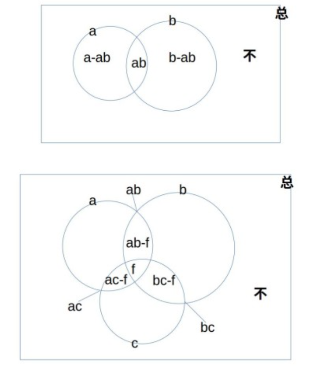
每个封闭区域只标一个数字
几个的和标在线上
三集合，两个的重合部分用延伸线
三集合，两个的重合部分用延伸线
十一、最值问题
（一）特征
（二）解法
1.最不利问题
可以这么理解：只要满足后面的条件，你就得死，那怎么才能死得慢一点，那就是尽量不要满足后面的条件。
解法：最不利+1
例题1：
一幅扑克牌，至少拿几张，才能保证一定有一张红桃？
解：只要拿到一张红桃你就得死，怎么才能死得慢一点，那就是尽量不要拿红桃，52张牌， 红桃13张，非红桃39张，所以至少拿39+1张牌，就一定会拿到一张红桃。
2.最少的最多多少，最多的最少多少
最少的最多比其他少1
最多的最少比其他多1
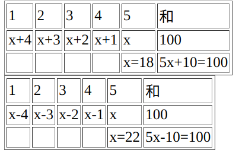
3.多集合，都参与的最少多少
反向求和作差
总 - （总-A + 总-B + 总-C）= A +B+C-2总
推广Q1+Q2+……+Qn-（n-1）总
例题1：
一共有100个人，其中参加语文辅导班的有70个人，参加数学的有60个人，参加英语的有80个人，三个班都参加的最少有多少人？
解：
100−(100−70+100−60+100−80)=70+60+80−200=10
十二、排列组合
（一）特征
两组不同的东西互相对应
（二）解法
1.分步乘法
做一件事需要2步，第一步有2种方案，第二步有3种方案，那么做这件事有几种方案
2*3=6种方案
2.分类加法
做一件事可以分成2类，第一类有2种方案，第二类有3种方案，那么做这件事有几种方案
2+3=5种方案
3.排列
两组不同的东西互相映射，有几种映射方案
5个人，5个位置，有几种映射法
从人到位置进行映射
第1步，第1个人，选定1个位置，有5种
第2步，第2个人，选定1个位置，有4种，因为第1个人已经选定了一个位置，还剩4个位置
第3步，第3个人，选定1个位置，有3种，因为前2个人已经选定了两个位置，还剩3个位置
第4步，第4个人，选定1个位置，有2种，因为还剩2个位置
第5步，第5个人，选定1个位置，只有1种
根据分步乘法，一共有5*4*3*2*1=120种
从而推出排列公式
4.组合
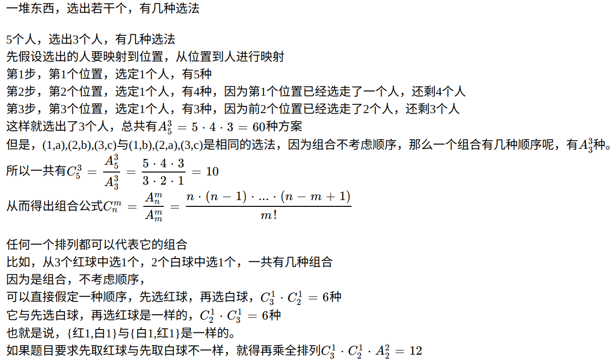
5.分组
一堆东西，分成若干组
实际上就是组合
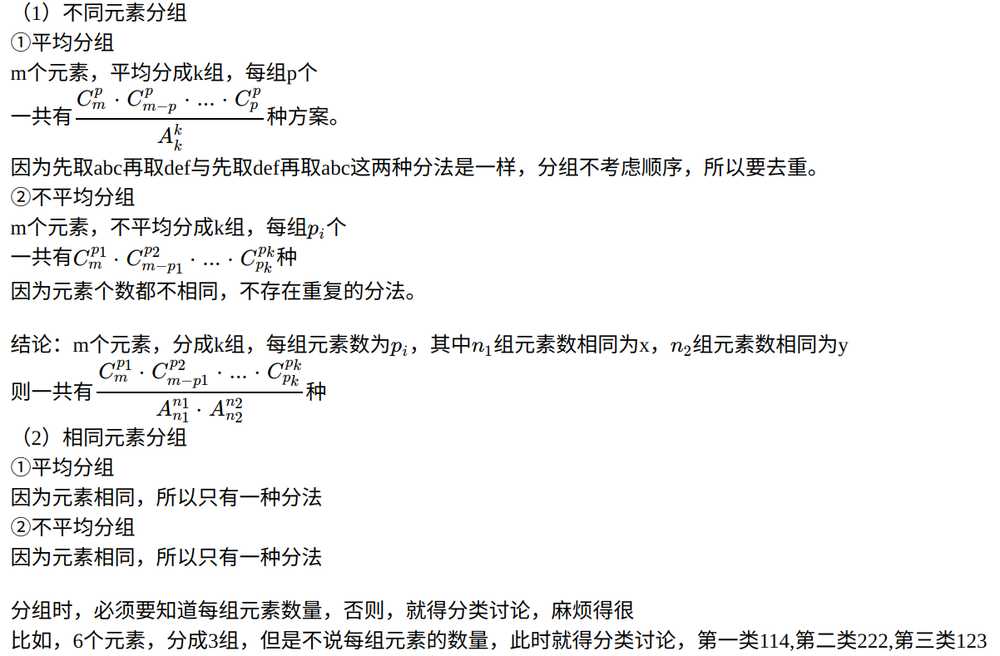
6.分配
把一组东西分配给另一组东西，实际上就是排列，两组东西互相映射，有几种映射方案
一般都是从元素少的向元素数多的映射，让少的选择多的
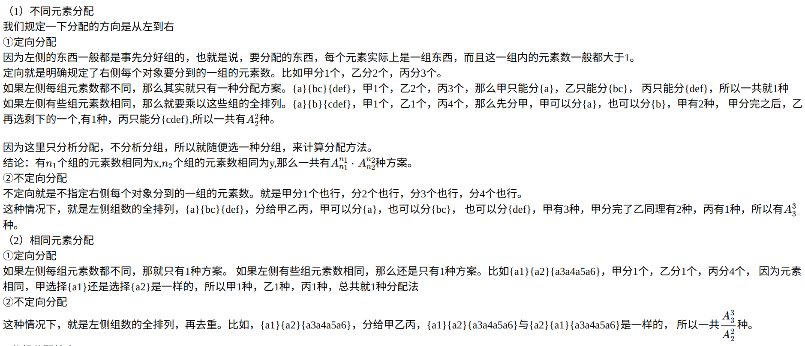
7.分组分配结合
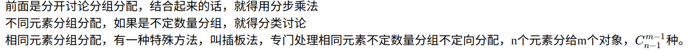
8.特殊题型
如果必须相邻，那就用捆绑法，将多个元素看成一个元素
如果必须不能相邻，那就用插空法，先安排其他元素，最后把不相邻的元素插入它们的空里
正难则反
特殊优先
环形排列，先锁定一个元素，剩下的全排列
错位排列，D2=1，D3=2，D4=9，D5=44
十三、间隔问题
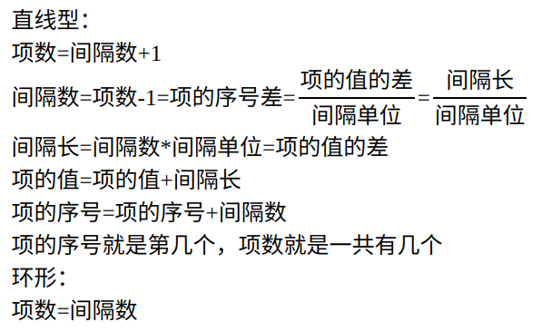
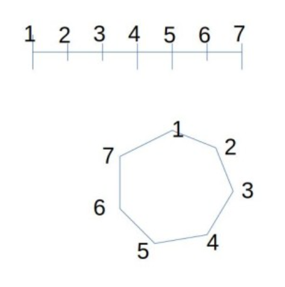
十四、等差数列
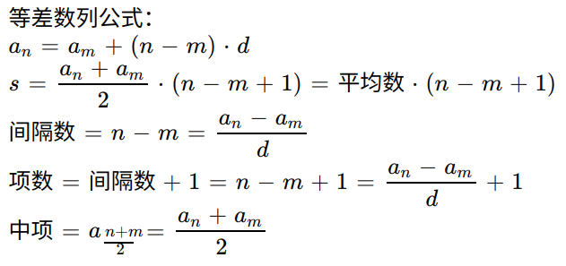
十五、周期问题
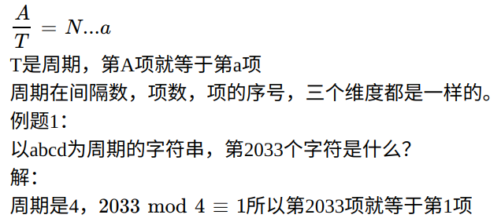
十六、星期日期
闰年，能被400整除，或者，能被4整除并且不能被100整除
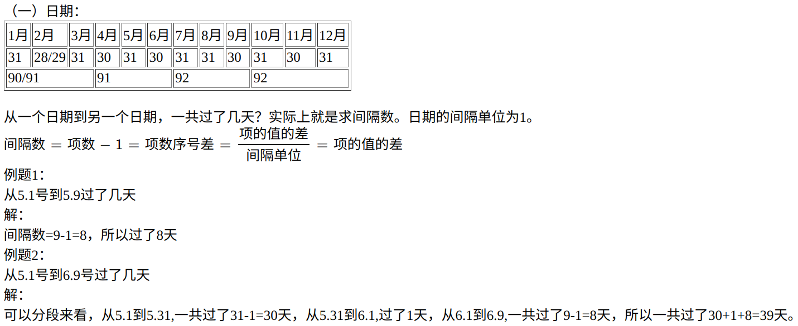
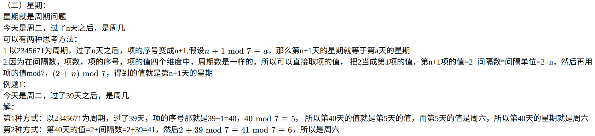
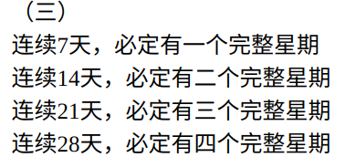
十七、方阵问题
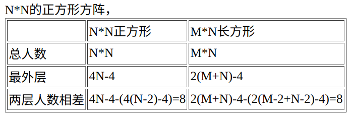
十八、几何问题

十九、比赛问题
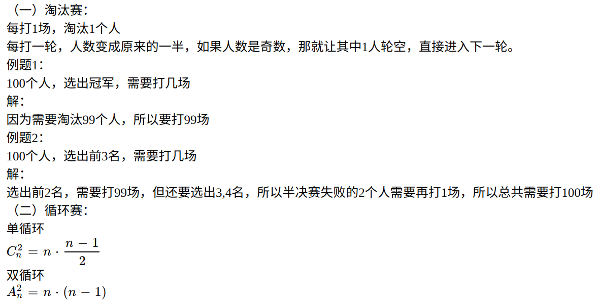
二十、牛吃草问题

二十一、天平称量
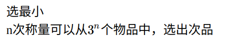
二十二、拿牌问题
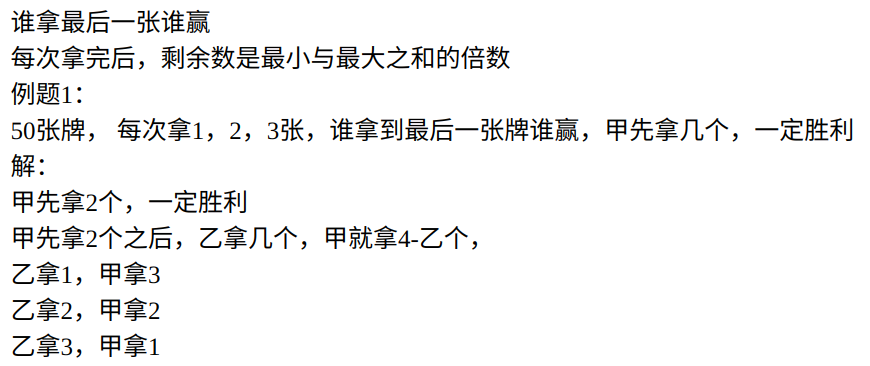
二十三、空瓶换酒
m个空瓶换1瓶酒，转化成m-1个空瓶换1个（无瓶酒）
二十四、剪绳子问题
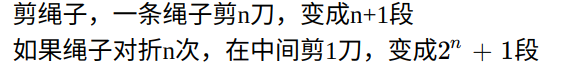